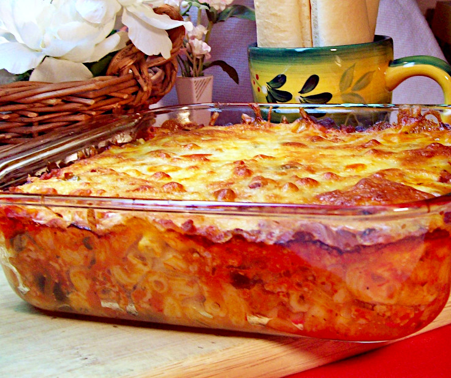

Tryston's Hamburger Casserole

Description
It couldn't be easier! The macaroni cooks while the hamburger casserole bakes. Top with mozzarella cheese and serve with soft breadsticks.
Ingredients
- 12 ounces lean ground beef
- 4 ounces onion
- 2 ounces green bell pepper
- 2 cloves garlic
- 2 cups prepared spaghetti sauce with garlic
- 1 cup water
- 1 cup elbow macaroni
- 1 cup sliced olives
- 4 ounces shredded mozzarella cheese
- 4 brown and serve breadsticks
Steps
- Brown ground beef in a skillet over medium heat. Stir often to break meat into small pieces.
- Chop onion, green bell pepper and garlic. Set aside. Turn oven on to 350 degrees.
- When meat has browned, drain off the fat and return to the skillet. Add chopped vegetables and continue cooking over medium heat until onion is slightly transparent.
- Add spaghetti sauce, water, elbow macaroni and sliced olives. Stir to blend and pour into a casserole dish. Place in oven and bake for 40 minutes.
- Remove casserole from oven and cover the top with grated mozzarella cheese. Replace in oven and continue baking.
- When the casserole goes into the oven for the second time place brown and serve breadsticks on a baking sheet and place in oven. Casserole will be ready to serve when the breadsticks are browned.